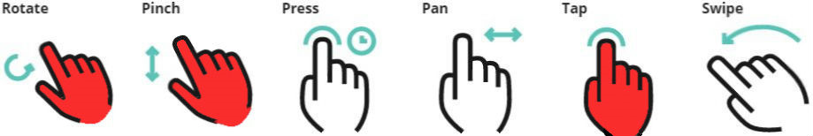

Software credits
MATLAB - This is the programming language which was used to created the dodecahedron.
Pixabey - Black and white zodiac images were taken from Pixabey to be engraved onto the dodecahedron. All of them are labelled "free for commercial reuse", "free of copyrights" and "no attribution required," as seen on the main site. All uncited images in this website were either created by the developers or found from this site. This picture, for example, was cropped to 12 individual pictures and engraved to the "western" dodecahedron.
MeshLab - A very helpful software for viewing 3D/STL files. The background image particularly was made possible with the help of this software, lots of screen shots with the snipping tool, and a free photo editing tool on the internet called Pixlr. MeshLab also helped with anti-aliasing through a process called Taubin Smoothing.
Hammer.js - This is an open-source JavaScript library/API used to detect special patterns specifically in touch screen data by the users (where users can use more than one finger for motions as described below). This project used three of the six possible pattern recognitions provided: rotation, pinching, and tapping.
Three.js - A specific JavaScript file available online which is also a JavaScript library/API hosted in GitHub, a very popular website for programmers to share their code. Most of the code in this library, if not all, are MIT Licensed and copyrighted "free of charge...without limitations the rights to use, copy, modify, merge, publish, distribute, sublicense, and/or sell copies of the Software...." All of the JavaScript programs taken and used in this project are licensed this way. This program can be credited to put all 3D models onto this website, such as loading "stl" files onto canvases, displaying the canvas, color schemes, lightings, camera position and angle of display, object rotation (on rotating manually or by entering the birthdate), zooming, and displaying a dynamic loading scene.